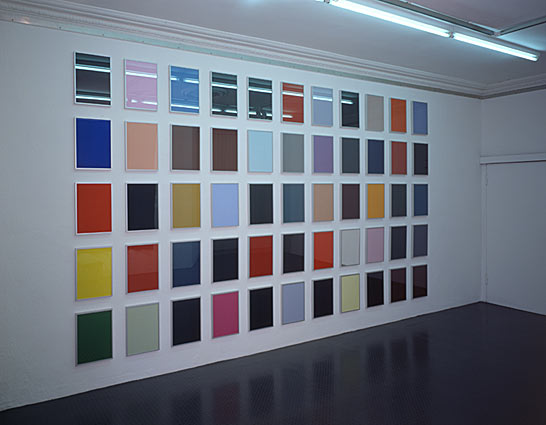
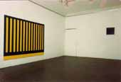
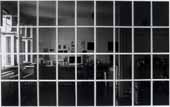

Galerie Anselm Dreher / Margarete Dreher

To Cover with Colouring Matter for Beauty,
2000
Sammlung Kupferstichkabinett, SMPK Berlin

12 Felder Weiß, 1986

Rasterbild Blau/Gelb, 1985/86,
12 Farben, 1986
Sammlung Wilhelm-Hack-Museum; Ludwigshafen

Permanentschwarz, 1991
Sammlung K.L., Berlin
ohne Titel, 1999
Cansons & Screens 2004
Sammlung Berlinische Galerie